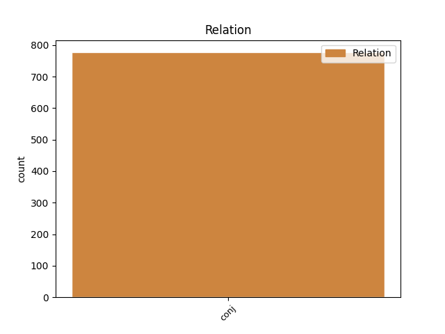
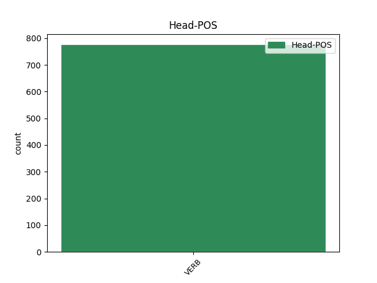
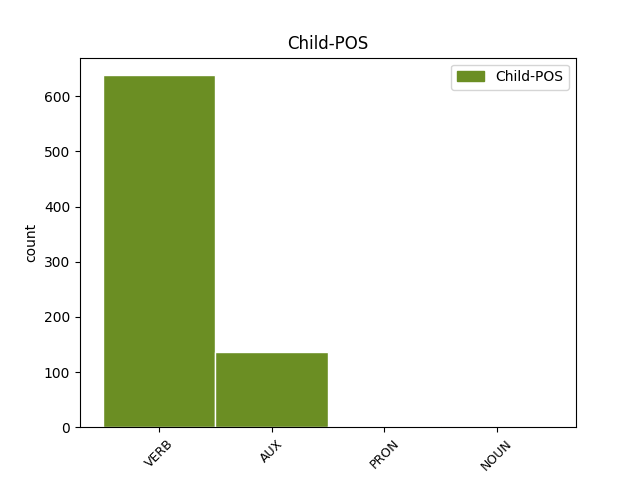

Distribution of features within this leaf



Agreement Rules sorted by frequency.
- When the dependent token is the conjunct(conj) of the head token, and the head token is VERB and the dependent token is VERB.
1 La _ _ _ _ 0 _ _ _
2 Authority _ _ _ _ 0 _ _ _
3 per _ _ _ _ 0 _ _ _
4 Berlino _ _ _ _ 0 _ _ _
5 spera sperare VERB V Mood=Ind|Number=Sing|Person=3|Tense=Pres|VerbForm=Fin 0 _ _ _
6 molto _ _ _ _ 0 _ _ _
7 in _ _ _ _ 0 _ _ _
8 investimenti _ _ _ _ 0 _ _ _
9 per _ _ _ _ 0 _ _ _
10 spettacolo _ _ _ _ 0 _ _ _
11 e _ _ _ _ 0 _ _ _
12 cultura _ _ _ _ 0 _ _ _
13 , _ _ _ _ 0 _ _ _
14 e _ _ _ _ 0 _ _ _
15 non _ _ _ _ 0 _ _ _
16 disdegna disdegnare VERB V Mood=Ind|Number=Sing|Person=3|Tense=Pres|VerbForm=Fin 5 conj _ _
17 di _ _ _ _ 0 _ _ _
18 veder _ _ _ _ 0 _ _ _
19 sfilare _ _ _ _ 0 _ _ _
20 qui _ _ _ _ 0 _ _ _
21 gli _ _ _ _ 0 _ _ _
22 enormi _ _ _ _ 0 _ _ _
23 , _ _ _ _ 0 _ _ _
24 colorati _ _ _ _ 0 _ _ _
25 cortei _ _ _ _ 0 _ _ _
26 di _ _ _ _ 0 _ _ _
27 Ravers _ _ _ _ 0 _ _ _
28 che _ _ _ _ 0 _ _ _
29 già _ _ _ _ 0 _ _ _
30 oggi _ _ _ _ 0 _ _ _
31 percorrono _ _ _ _ 0 _ _ _
32 pacifici _ _ _ _ 0 _ _ _
33 la _ _ _ _ 0 _ _ _
34 città _ _ _ _ 0 _ _ _
35 a _ _ _ _ 0 _ _ _
36 il _ _ _ _ 0 _ _ _
37 ritmo _ _ _ _ 0 _ _ _
38 Techno _ _ _ _ 0 _ _ _
39 . _ _ _ _ 0 _ _ _
1 La _ _ _ _ 0 _ _ _
2 seconda _ _ _ _ 0 _ _ _
3 strada _ _ _ _ 0 _ _ _
4 , _ _ _ _ 0 _ _ _
5 invece _ _ _ _ 0 _ _ _
6 , _ _ _ _ 0 _ _ _
7 ripercorre _ _ _ _ 0 _ _ _
8 la _ _ _ _ 0 _ _ _
9 scansione _ _ _ _ 0 _ _ _
10 di _ _ _ _ 0 _ _ _
11 le _ _ _ _ 0 _ _ _
12 mosse _ _ _ _ 0 _ _ _
13 di _ _ _ _ 0 _ _ _
14 i _ _ _ _ 0 _ _ _
15 " _ _ _ _ 0 _ _ _
16 nemici _ _ _ _ 0 _ _ _
17 " _ _ _ _ 0 _ _ _
18 , _ _ _ _ 0 _ _ _
19 e _ _ _ _ 0 _ _ _
20 sono _ _ _ _ 0 _ _ _
21 tanti _ _ _ _ 0 _ _ _
22 , _ _ _ _ 0 _ _ _
23 di _ _ _ _ 0 _ _ _
24 l' _ _ _ _ 0 _ _ _
25 inchiesta _ _ _ _ 0 _ _ _
26 " _ _ _ _ 0 _ _ _
27 mani _ _ _ _ 0 _ _ _
28 pulite _ _ _ _ 0 _ _ _
29 " _ _ _ _ 0 _ _ _
30 : _ _ _ _ 0 _ _ _
31 cominciò cominciare VERB V Mood=Ind|Number=Sing|Person=3|Tense=Past|VerbForm=Fin 0 _ _ _
32 Bettino _ _ _ _ 0 _ _ _
33 Craxi _ _ _ _ 0 _ _ _
34 su _ _ _ _ 0 _ _ _
35 l' _ _ _ _ 0 _ _ _
36 Avanti_! _ _ _ _ 0 _ _ _
37 e _ _ _ _ 0 _ _ _
38 la _ _ _ _ 0 _ _ _
39 storia _ _ _ _ 0 _ _ _
40 non _ _ _ _ 0 _ _ _
41 è essere AUX VA Mood=Ind|Number=Sing|Person=3|Tense=Pres|VerbForm=Fin 31 conj _ _
42 per _ _ _ _ 0 _ _ _
43 niente _ _ _ _ 0 _ _ _
44 finita _ _ _ _ 0 _ _ _
45 . _ _ _ _ 0 _ _ _
1 A _ _ _ _ 0 _ _ _
2 le _ _ _ _ 0 _ _ _
3 21:30 _ _ _ _ 0 _ _ _
4 in _ _ _ _ 0 _ _ _
5 l' _ _ _ _ 0 _ _ _
6 ambito _ _ _ _ 0 _ _ _
7 di _ _ _ _ 0 _ _ _
8 Roma _ _ _ _ 0 _ _ _
9 Europa _ _ _ _ 0 _ _ _
10 Festival _ _ _ _ 0 _ _ _
11 , _ _ _ _ 0 _ _ _
12 la _ _ _ _ 0 _ _ _
13 scuola _ _ _ _ 0 _ _ _
14 popolare _ _ _ _ 0 _ _ _
15 di _ _ _ _ 0 _ _ _
16 musica _ _ _ _ 0 _ _ _
17 di _ _ _ _ 0 _ _ _
18 Testaccio _ _ _ _ 0 _ _ _
19 presenta _ _ _ _ 0 _ _ _
20 fogli _ _ _ _ 0 _ _ _
21 d' _ _ _ _ 0 _ _ _
22 album _ _ _ _ 0 _ _ _
23 di _ _ _ _ 0 _ _ _
24 l' _ _ _ _ 0 _ _ _
25 800 _ _ _ _ 0 _ _ _
26 , _ _ _ _ 0 _ _ _
27 le _ _ _ _ 0 _ _ _
28 canzoni _ _ _ _ 0 _ _ _
29 anarchiche _ _ _ _ 0 _ _ _
30 e _ _ _ _ 0 _ _ _
31 patriottiche _ _ _ _ 0 _ _ _
32 rivisitate rivisitare VERB V Gender=Fem|Number=Plur|Tense=Past|VerbForm=Part 0 _ _ _
33 da _ _ _ _ 0 _ _ _
34 Giovanna _ _ _ _ 0 _ _ _
35 Marini _ _ _ _ 0 _ _ _
36 e _ _ _ _ 0 _ _ _
37 adattate adattare PRON PP Gender=Fem|Number=Plur|Poss=Yes|PronType=Prs|Tense=Past|VerbForm=Part 32 conj _ _
38 per _ _ _ _ 0 _ _ _
39 la _ _ _ _ 0 _ _ _
40 banda _ _ _ _ 0 _ _ _
41 e _ _ _ _ 0 _ _ _
42 coro _ _ _ _ 0 _ _ _
43 da _ _ _ _ 0 _ _ _
44 Saverio _ _ _ _ 0 _ _ _
45 Cortesi _ _ _ _ 0 _ _ _
46 . _ _ _ _ 0 _ _ _
1 Tra _ _ _ _ 0 _ _ _
2 queste _ _ _ _ 0 _ _ _
3 figura figurare VERB V Mood=Ind|Number=Sing|Person=3|Tense=Pres|VerbForm=Fin 0 _ _ _
4 appunto _ _ _ _ 0 _ _ _
5 il _ _ _ _ 0 _ _ _
6 60% _ _ _ _ 0 _ _ _
7 di _ _ _ _ 0 _ _ _
8 la _ _ _ _ 0 _ _ _
9 Cesi _ _ _ _ 0 _ _ _
10 e _ _ _ _ 0 _ _ _
11 quindi _ _ _ _ 0 _ _ _
12 , _ _ _ _ 0 _ _ _
13 indirettamente _ _ _ _ 0 _ _ _
14 , _ _ _ _ 0 _ _ _
15 il _ _ _ _ 0 _ _ _
16 controllo controllo NOUN S Gender=Masc|Number=Sing 3 conj _ _
17 di _ _ _ _ 0 _ _ _
18 la _ _ _ _ 0 _ _ _
19 Merone _ _ _ _ 0 _ _ _
20 . _ _ _ _ 0 _ _ _
Disagree Examples:
1 A _ _ _ _ 0 _ _ _
2 fronte _ _ _ _ 0 _ _ _
3 di _ _ _ _ 0 _ _ _
4 una _ _ _ _ 0 _ _ _
5 articolata _ _ _ _ 0 _ _ _
6 capacità _ _ _ _ 0 _ _ _
7 progettuale _ _ _ _ 0 _ _ _
8 , _ _ _ _ 0 _ _ _
9 infatti _ _ _ _ 0 _ _ _
10 , _ _ _ _ 0 _ _ _
11 la _ _ _ _ 0 _ _ _
12 realizzazione _ _ _ _ 0 _ _ _
13 di _ _ _ _ 0 _ _ _
14 i _ _ _ _ 0 _ _ _
15 progetti _ _ _ _ 0 _ _ _
16 infrastrutturali _ _ _ _ 0 _ _ _
17 incontra incontrare VERB V Mood=Ind|Number=Sing|Person=3|Tense=Pres|VerbForm=Fin 0 _ _ _
18 enormi _ _ _ _ 0 _ _ _
19 difficoltà _ _ _ _ 0 _ _ _
20 e _ _ _ _ 0 _ _ _
21 , _ _ _ _ 0 _ _ _
22 quando _ _ _ _ 0 _ _ _
23 si _ _ _ _ 0 _ _ _
24 arriva _ _ _ _ 0 _ _ _
25 a _ _ _ _ 0 _ _ _
26 il _ _ _ _ 0 _ _ _
27 cantiere _ _ _ _ 0 _ _ _
28 , _ _ _ _ 0 _ _ _
29 i _ _ _ _ 0 _ _ _
30 tempi _ _ _ _ 0 _ _ _
31 di _ _ _ _ 0 _ _ _
32 esecuzione _ _ _ _ 0 _ _ _
33 di _ _ _ _ 0 _ _ _
34 le _ _ _ _ 0 _ _ _
35 opere _ _ _ _ 0 _ _ _
36 sono essere AUX VA Mood=Ind|Number=Plur|Person=3|Tense=Pres|VerbForm=Fin 17 conj _ _
37 infiniti _ _ _ _ 0 _ _ _
38 , _ _ _ _ 0 _ _ _
39 con _ _ _ _ 0 _ _ _
40 la _ _ _ _ 0 _ _ _
41 conseguenza _ _ _ _ 0 _ _ _
42 di _ _ _ _ 0 _ _ _
43 lavori _ _ _ _ 0 _ _ _
44 eternamente _ _ _ _ 0 _ _ _
45 in _ _ _ _ 0 _ _ _
46 corso _ _ _ _ 0 _ _ _
47 o _ _ _ _ 0 _ _ _
48 addirittura _ _ _ _ 0 _ _ _
49 bloccati _ _ _ _ 0 _ _ _
50 . _ _ _ _ 0 _ _ _
1 Lui _ _ _ _ 0 _ _ _
2 non _ _ _ _ 0 _ _ _
3 se _ _ _ _ 0 _ _ _
4 ne _ _ _ _ 0 _ _ _
5 accorge accorgere VERB V Mood=Ind|Number=Sing|Person=3|Tense=Pres|VerbForm=Fin 0 _ _ _
6 , _ _ _ _ 0 _ _ _
7 ma _ _ _ _ 0 _ _ _
8 quelle _ _ _ _ 0 _ _ _
9 parole _ _ _ _ 0 _ _ _
10 mi _ _ _ _ 0 _ _ _
11 aizzano aizzare VERB V Mood=Ind|Number=Plur|Person=3|Tense=Pres|VerbForm=Fin 5 conj _ _
12 contro _ _ _ _ 0 _ _ _
13 schegge _ _ _ _ 0 _ _ _
14 e _ _ _ _ 0 _ _ _
15 spezzoni _ _ _ _ 0 _ _ _
16 di _ _ _ _ 0 _ _ _
17 Sisde _ _ _ _ 0 _ _ _
18 > _ _ _ _ 0 _ _ _
19 . _ _ _ _ 0 _ _ _
1 La _ _ _ _ 0 _ _ _
2 lista _ _ _ _ 0 _ _ _
3 di _ _ _ _ 0 _ _ _
4 le _ _ _ _ 0 _ _ _
5 persone _ _ _ _ 0 _ _ _
6 per _ _ _ _ 0 _ _ _
7 le _ _ _ _ 0 _ _ _
8 quali _ _ _ _ 0 _ _ _
9 si _ _ _ _ 0 _ _ _
10 chiede _ _ _ _ 0 _ _ _
11 il _ _ _ _ 0 _ _ _
12 processo _ _ _ _ 0 _ _ _
13 comprende comprendere VERB V Mood=Ind|Number=Sing|Person=3|Tense=Pres|VerbForm=Fin 0 _ _ _
14 nomi _ _ _ _ 0 _ _ _
15 di _ _ _ _ 0 _ _ _
16 rilievo _ _ _ _ 0 _ _ _
17 , _ _ _ _ 0 _ _ _
18 tra _ _ _ _ 0 _ _ _
19 cui _ _ _ _ 0 _ _ _
20 l' _ _ _ _ 0 _ _ _
21 ex _ _ _ _ 0 _ _ _
22 ministro _ _ _ _ 0 _ _ _
23 di _ _ _ _ 0 _ _ _
24 la _ _ _ _ 0 _ _ _
25 difesa _ _ _ _ 0 _ _ _
26 Salvo _ _ _ _ 0 _ _ _
27 Andò _ _ _ _ 0 _ _ _
28 , _ _ _ _ 0 _ _ _
29 e _ _ _ _ 0 _ _ _
30 ci _ _ _ _ 0 _ _ _
31 sarebbero essere VERB V Mood=Cnd|Number=Plur|Person=3|Tense=Pres|VerbForm=Fin 13 conj _ _
32 anche _ _ _ _ 0 _ _ _
33 alcuni _ _ _ _ 0 _ _ _
34 magistrati _ _ _ _ 0 _ _ _
35 di _ _ _ _ 0 _ _ _
36 la _ _ _ _ 0 _ _ _
37 corte _ _ _ _ 0 _ _ _
38 di _ _ _ _ 0 _ _ _
39 i _ _ _ _ 0 _ _ _
40 conti _ _ _ _ 0 _ _ _
41 i _ _ _ _ 0 _ _ _
42 quali _ _ _ _ 0 _ _ _
43 , _ _ _ _ 0 _ _ _
44 secondo _ _ _ _ 0 _ _ _
45 l' _ _ _ _ 0 _ _ _
46 accusa _ _ _ _ 0 _ _ _
47 , _ _ _ _ 0 _ _ _
48 non _ _ _ _ 0 _ _ _
49 avrebbero _ _ _ _ 0 _ _ _
50 svolto _ _ _ _ 0 _ _ _
51 con _ _ _ _ 0 _ _ _
52 il _ _ _ _ 0 _ _ _
53 dovuto _ _ _ _ 0 _ _ _
54 rigore _ _ _ _ 0 _ _ _
55 i _ _ _ _ 0 _ _ _
56 controlli _ _ _ _ 0 _ _ _
57 demandati _ _ _ _ 0 _ _ _
58 loro _ _ _ _ 0 _ _ _
59 istituzionalmente _ _ _ _ 0 _ _ _
60 , _ _ _ _ 0 _ _ _
61 finendo _ _ _ _ 0 _ _ _
62 anzi _ _ _ _ 0 _ _ _
63 su _ _ _ _ 0 _ _ _
64 il _ _ _ _ 0 _ _ _
65 libro _ _ _ _ 0 _ _ _
66 paga _ _ _ _ 0 _ _ _
67 di _ _ _ _ 0 _ _ _
68 il _ _ _ _ 0 _ _ _
69 servizio _ _ _ _ 0 _ _ _
70 . _ _ _ _ 0 _ _ _
1 Il _ _ _ _ 0 _ _ _
2 dibattimento _ _ _ _ 0 _ _ _
3 il _ _ _ _ 0 _ _ _
4 5 _ _ _ _ 0 _ _ _
5 luglio _ _ _ _ 0 _ _ _
6 - _ _ _ _ 0 _ _ _
7 accolti accogliere VERB V Gender=Masc|Number=Plur|Tense=Past|VerbForm=Part 0 _ _ _
8 quattro _ _ _ _ 0 _ _ _
9 patteggiamenti _ _ _ _ 0 _ _ _
10 e _ _ _ _ 0 _ _ _
11 prosciolto prosciogliere VERB V Gender=Masc|Number=Sing|Tense=Past|VerbForm=Part 7 conj _ _
12 Michetti _ _ _ _ 0 _ _ _
13 . _ _ _ _ 0 _ _ _
1 Tra _ _ _ _ 0 _ _ _
2 Russia _ _ _ _ 0 _ _ _
3 e _ _ _ _ 0 _ _ _
4 Nato _ _ _ _ 0 _ _ _
5 , _ _ _ _ 0 _ _ _
6 invece _ _ _ _ 0 _ _ _
7 , _ _ _ _ 0 _ _ _
8 ci _ _ _ _ 0 _ _ _
9 vuole volere VERB V Mood=Ind|Number=Sing|Person=3|Tense=Pres|VerbForm=Fin 0 _ _ _
10 da _ _ _ _ 0 _ _ _
11 subito _ _ _ _ 0 _ _ _
12 una _ _ _ _ 0 _ _ _
13 cooperazione _ _ _ _ 0 _ _ _
14 più _ _ _ _ 0 _ _ _
15 approfondita _ _ _ _ 0 _ _ _
16 , _ _ _ _ 0 _ _ _
17 ci _ _ _ _ 0 _ _ _
18 vogliono volere VERB V Mood=Ind|Number=Plur|Person=3|Tense=Pres|VerbForm=Fin 9 conj _ _
19 consultazioni _ _ _ _ 0 _ _ _
20 politiche _ _ _ _ 0 _ _ _
21 e _ _ _ _ 0 _ _ _
22 la _ _ _ _ 0 _ _ _
23 concertazione _ _ _ _ 0 _ _ _
24 in _ _ _ _ 0 _ _ _
25 il _ _ _ _ 0 _ _ _
26 processo _ _ _ _ 0 _ _ _
27 decisionale _ _ _ _ 0 _ _ _
28 . _ _ _ _ 0 _ _ _